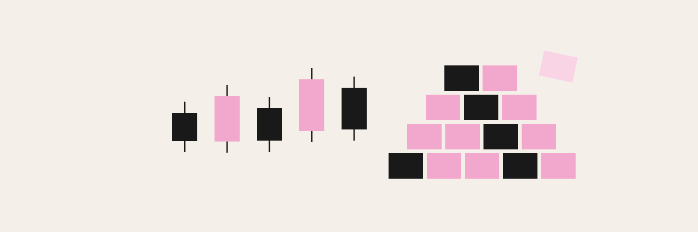
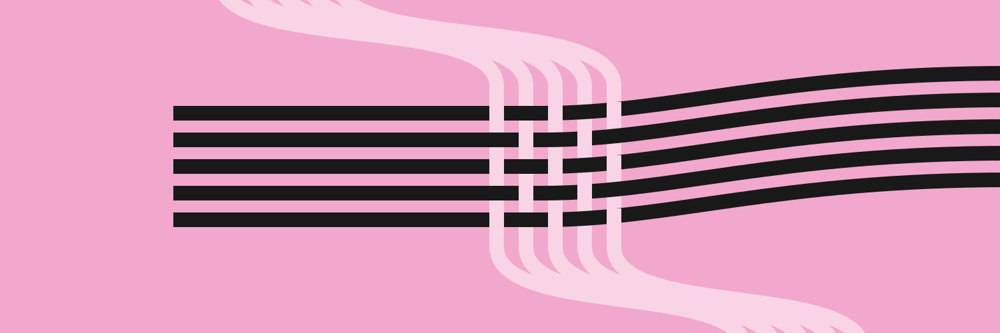
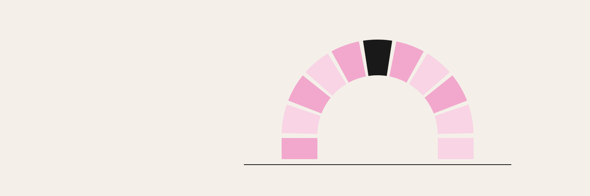
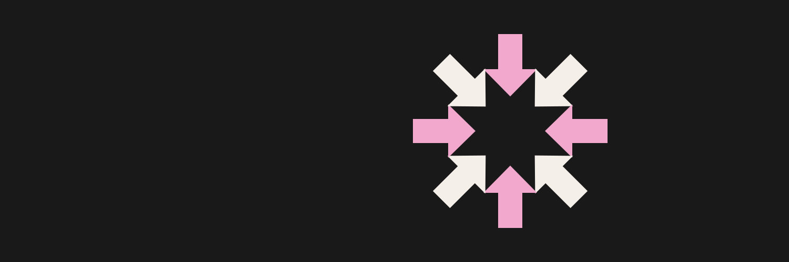
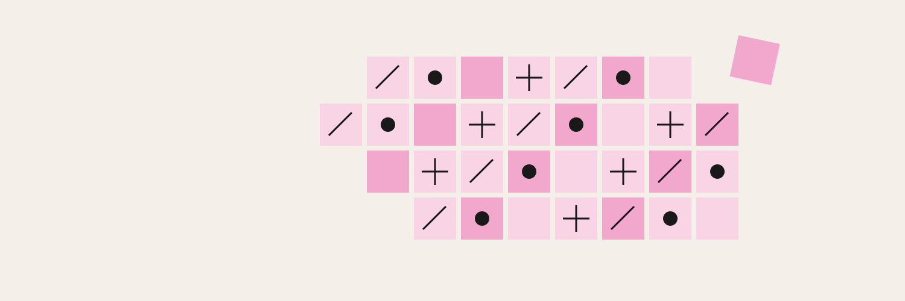
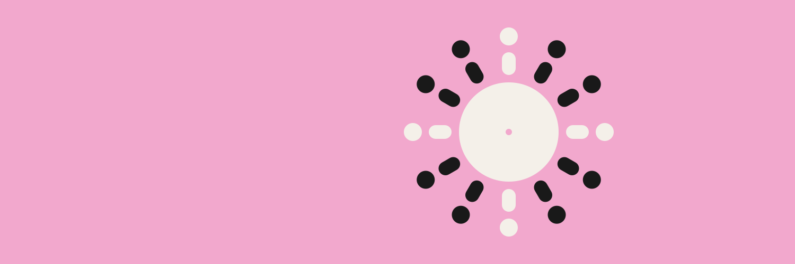
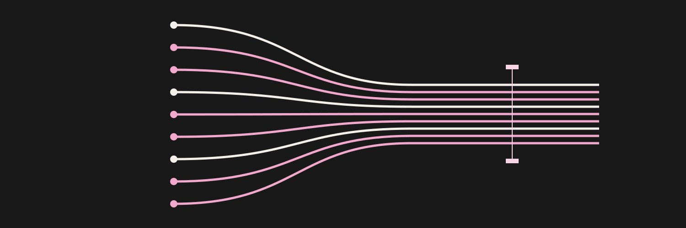
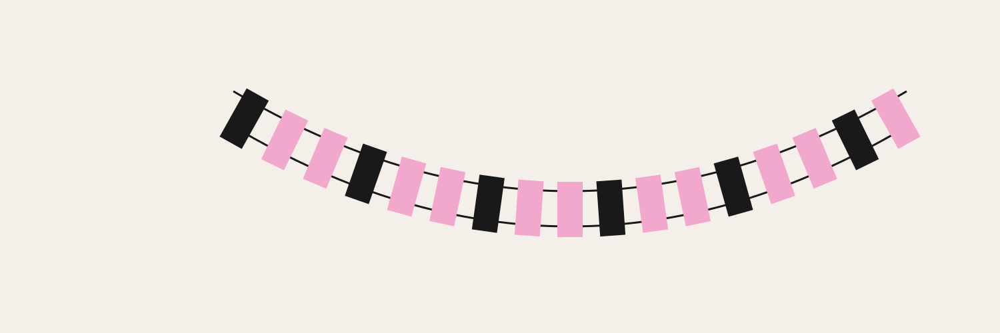
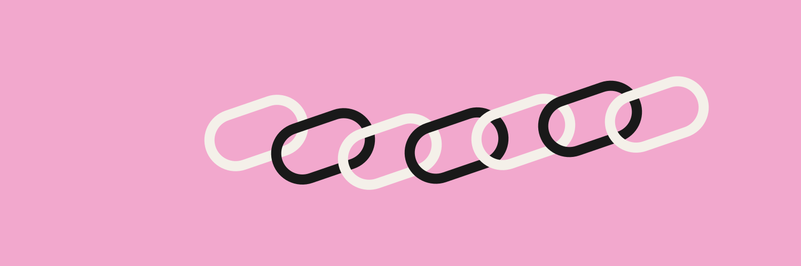
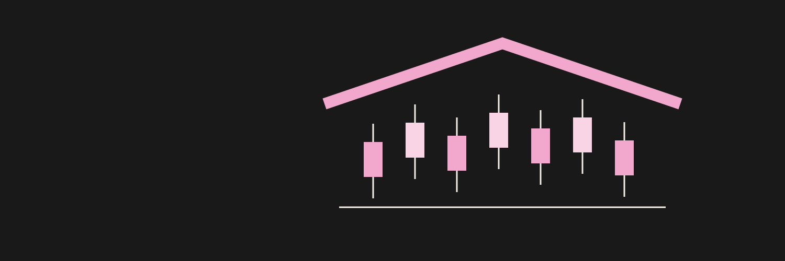

01 / Market makersCandlesticks turn into building blocks: the traders become the builders.SVG ↓PNG ↓
02 / Common threadSeparate strands become one woven fabric: individual contributions create collective strength.SVG ↓PNG ↓
03 / Held togetherAn arch of equal pieces stands because every holder supports the whole.SVG ↓PNG ↓
04 / Everyone shipsEight cursor-like arrows converge on shared space: everyone can act and contribute.SVG ↓PNG ↓
05 / Built by manyDifferent marks fill a common patchwork. The open edge leaves room for the next contributor.SVG ↓PNG ↓
06 / A seat for everyoneAn equal circle of participants surrounds a shared table, with no head of the room.SVG ↓PNG ↓
07 / Shared directionIndependent paths align into a common direction while every individual remains visible.SVG ↓PNG ↓
08 / Common groundSeparate planks form a continuous bridge: the community makes connection possible.SVG ↓PNG ↓
09 / Skin in the gameInterlocking links turn individual commitments into one continuous collective.SVG ↓PNG ↓
10 / Under one roofMarket candles become the columns of a shared home: the traders support and build the house.SVG ↓PNG ↓